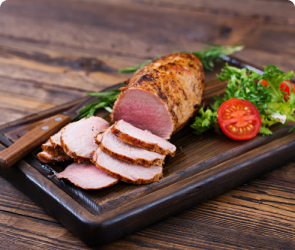
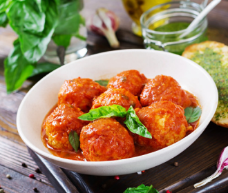

Натуральный состав
Натуральный состав
 Строгое соблюдение
качества
Строгое соблюдение
качества Быстро и просто
приготовить
Быстро и просто
приготовить Свежая, вкусная
продукция
Свежая, вкусная
продукция
К столу,
по любопу поводу
Блюда на столе

К столу,
по любопу поводу
Блюда на столе

К столу,
по любопу поводу
Блюда на столе

К столу,
по любопу поводу
Блюда на столе
Сочные новинки

Грудинка свиная запеченая
ПРЕМИУМ
Вес 0.300 кг
Не требует приготовления
Грудинка свиная запеченая
ПРЕМИУМ
Вес 0.300 кг
Не требует приготовления
Сервировка и приготовление
Тефтели мясные
Видеорецепт

Ингридиенты
- Морковь 1 штука
- Морковь 1 штука
- Морковь 1 штука
Готовится 45 минут
Рецепт
- Рис отварить, промыть в холодной воде.
- Морковь натереть на терке, лук нарезать кубиками.
- Фарш посолить, поперчить, добавить половину лука, тертую морковь, рис и замесить фарш.